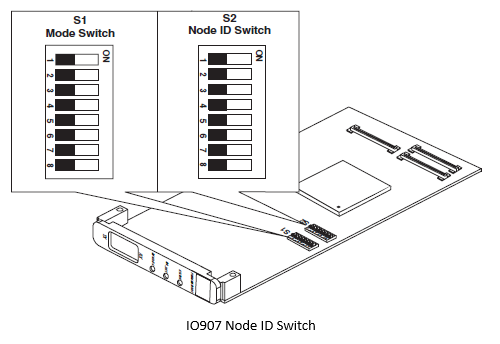
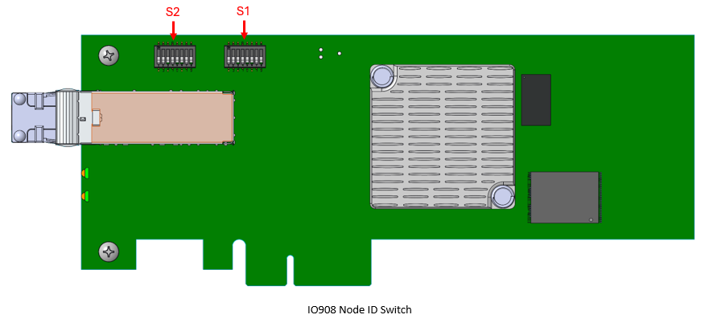
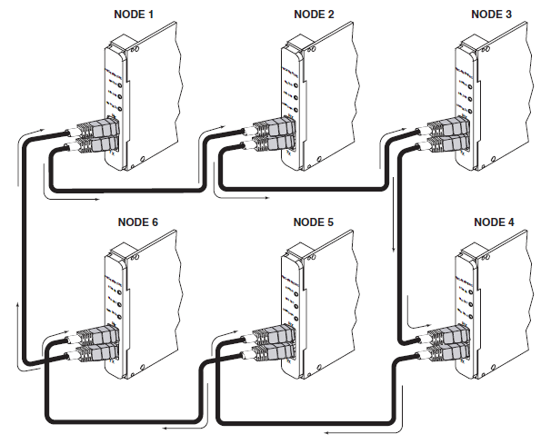

IO907/IO908 Usage Notes
IO907/IO908 Usage Notes — Usage information about the I/O module
Setting the Node ID
 
The switch bank S2 is used to assign a unique ID for the IO907/IO908 on the shared memory network. By default Speedgoat assigns ID = 1. For deliveries with several target machines, each system will have a different ID (1, 2, 3…), however it's possible to change the ID at any time. Possible IDs are from 0 to 0xFF (255 decimal).
Network Wiring
Each I/O module has two fiber optic connections, RX (receive) and TX (transmit). When connecting two systems, a crossed connection is required. For networks with several nodes, a ring connection is required.

For other network topology (e.g. star), the following hubs can be used (only for IO907):
ACC-5595
HUB-5595
Shared Memory Initialization
The IO907/IO908 I/O modules need to be initialized. This can done with an M-file, which is then loaded with your Simulink model.
Memory Partitions
For each variable, a partition must be defined. The example below shows how to define the variables:
Partitions(1).Size = '1'; Partitions(1).Type = 'uint8'; Partitions(2).Size = '2'; Partitions(2).Type = 'double'; Partitions(3).Size = '1'; Partitions(3).Type = 'double'; Partitions(4).Size = '1'; Partitions(4).Type = 'uint8'; Partitions(5).Size = '2'; Partitions(5).Type = 'double'; Partitions(6).Size = '1'; Partitions(6).Type = 'double'; Partitions(6).Address = '0x5000'; Partitions = completepartitionstruct(Partitions,'5565');
For further information, function scgtpartitionstruct can be used.
Partition = scgtpartitionstruct(Partition);
You do not need to use all the fields of a partition initialization structure. However, knowledge of the possible structure fields will be helpful when you are setting up the partition structure to use shared memory.
A shared memory partition structure has the following fields:
| Field | Description |
|---|---|
| Address | Specifies the base address (in hexadecimal, for example, '0x08') of the memory partition within the shared memory space of the node. The default value is '0x00', the first location in the shared memory. |
| Type |
Specifies the data type of the memory segment. Specify one of the following types:
|
| Size |
Specifies the dimension and size of the memory segment. You can enter a scalar value or a value with the [m,n] format. The default value is '1'.
|
| Alignment | If another partition precedes this partition, this field defines the byte alignment of this segment. Specify one of the following alignment values: 1, 2, 3, 4, or 8. The default value is '4'. |
The variables defined in the memory partition are used for read and write from all shared memory nodes.
Nodes
Each shared memory I/O module installed needs to have a "node ID":
Master – Node ID = 1
MasterNode.Interface.NodeID = '1'; MasterNode.Partitions = Partitions; MasterNode = completenodestruct(MasterNode,'5565');
Slave – Node ID = 2
SlaveNode.Interface.NodeID = '2'; SlaveNode.Interface.Interrupts.PendingInt1='on'; SlaveNode.Partitions = Partitions; SlaveNode = completenodestruct(SlaveNode,'5565');
![[Note]](images/note.png) | Note |
|---|---|
Available Interrupts
|